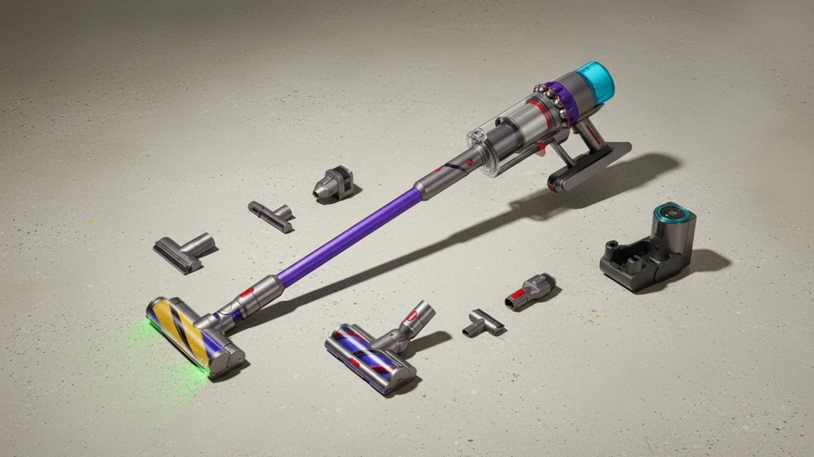
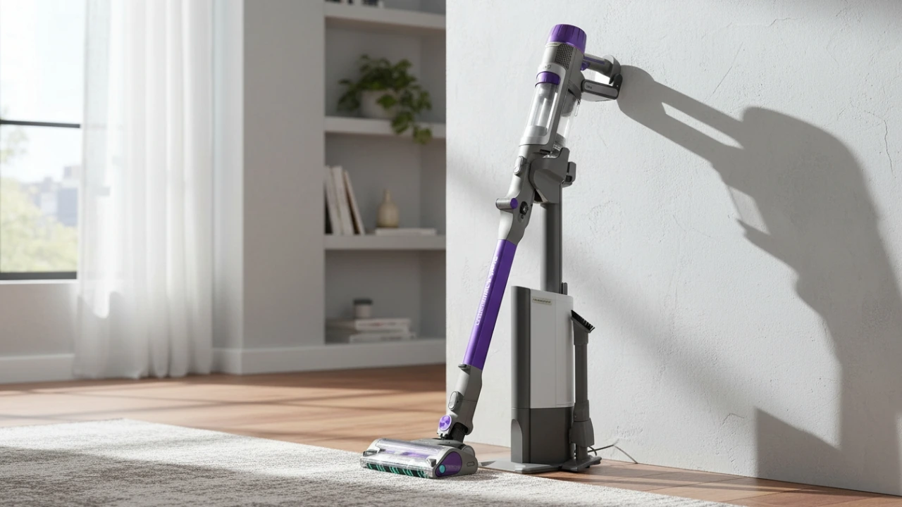
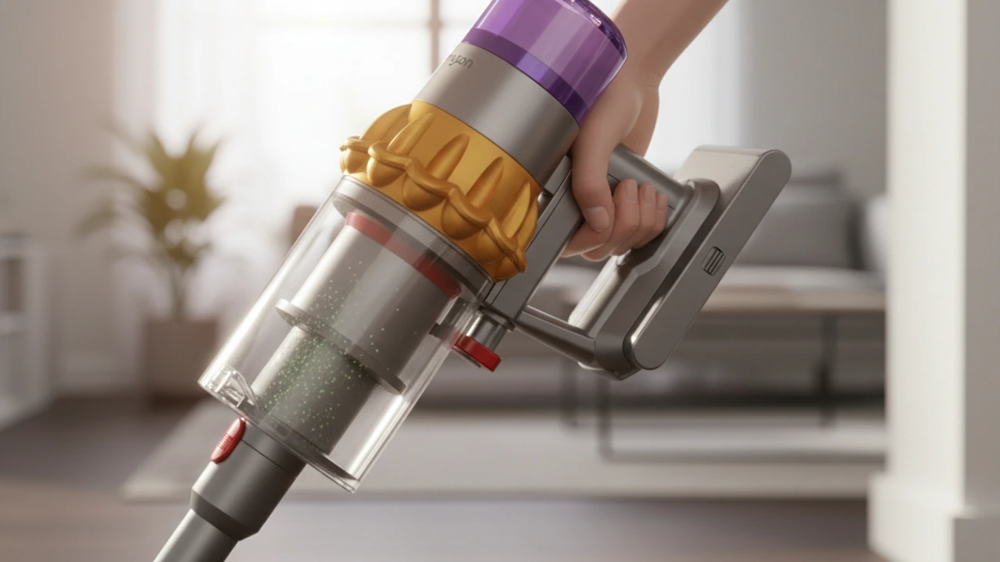
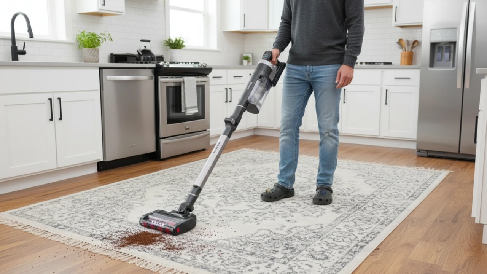
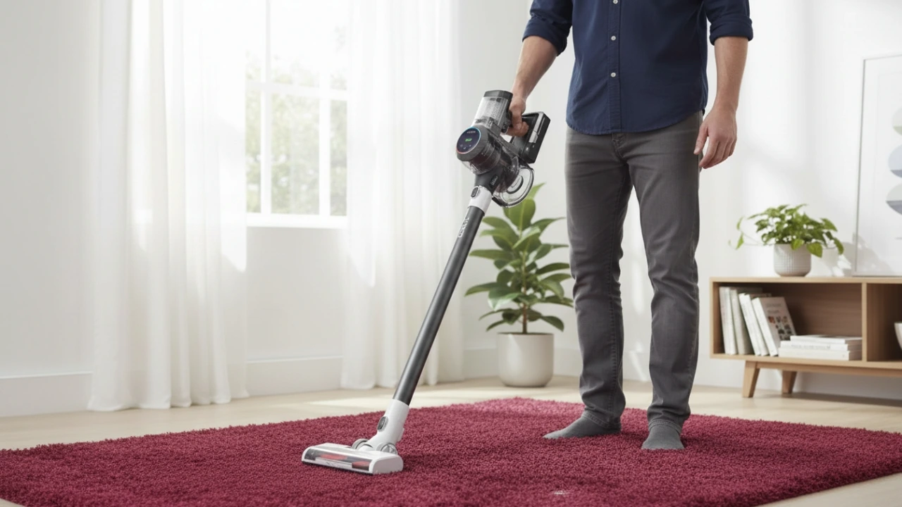
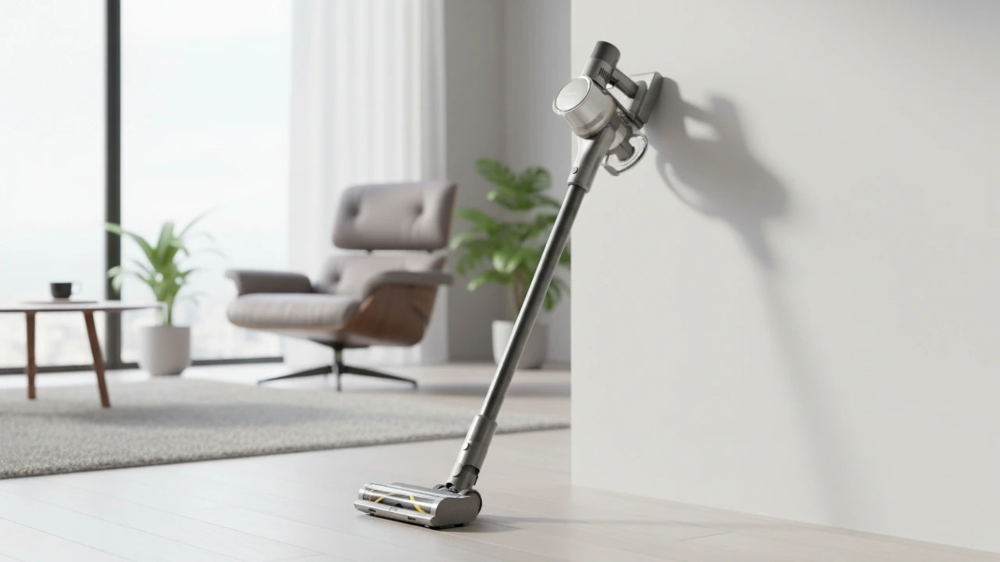
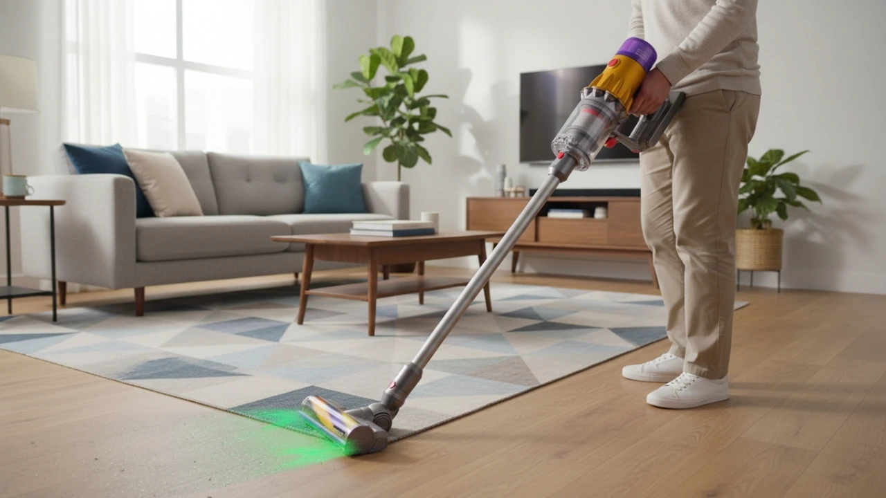
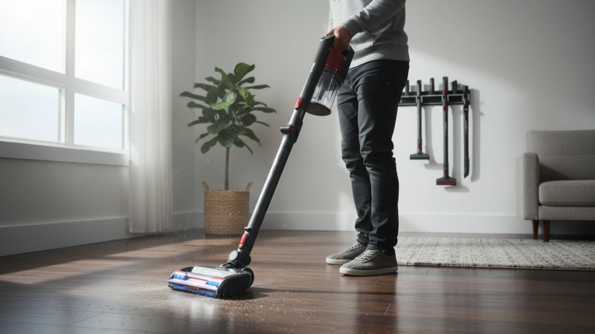
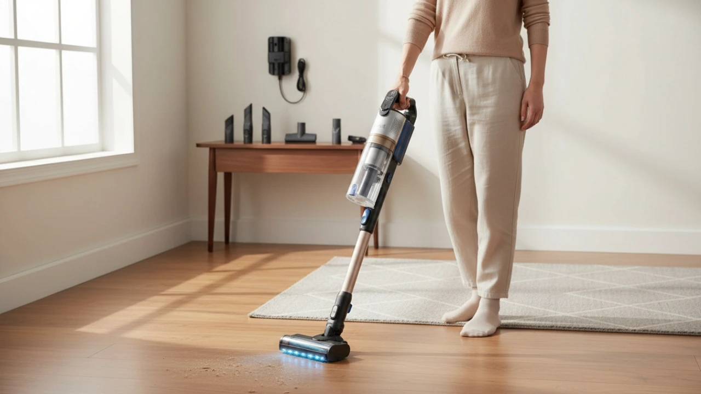
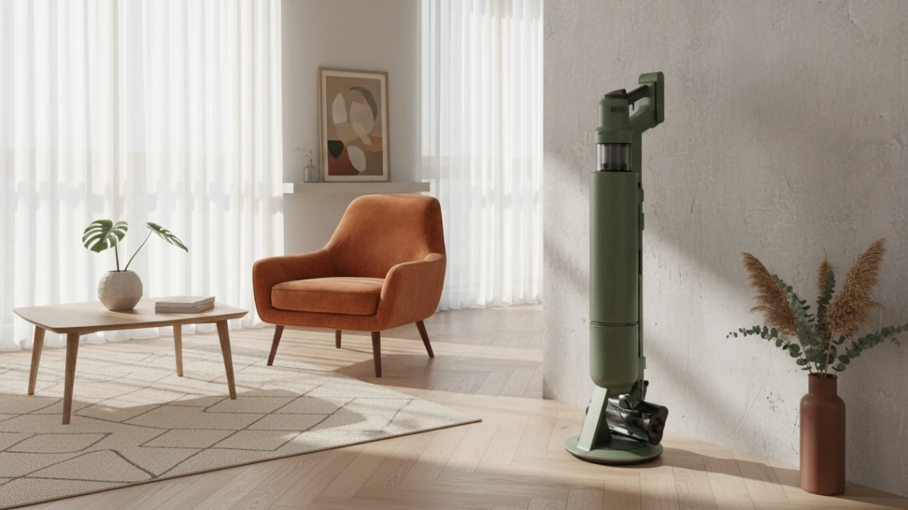

Cordless vacuum cleaners have moved from niche convenience products to primary cleaning tools in many households. Industry reports from 2024–2025 show cordless models now account for over half of global vacuum cleaner sales, driven by advances in lithium-ion batteries, high-speed digital motors, and sealed HEPA filtration systems.
Runtime limitations, once the biggest drawback, have narrowed significantly, with leading models exceeding 60–70 minutes in low-power modes while maintaining strong airflow for everyday cleaning.
At the same time, consumer expectations have shifted. Buyers now compare suction in Air Watts rather than marketing wattage, look for verified filtration efficiency, and prioritize features like auto-empty bases, anti-hair-wrap brush rolls, and intelligent dust detection.
As a result, the cordless vacuum category has become more technically complex — and harder to evaluate — than traditional corded models.
Best 10 Cordless Vacuum Cleaners of 2026
Not every cordless vacuum earns a spot on this list. The models below were selected after comparing real-world performance data, independent lab testing, verified manufacturer specifications, and how each vacuum behaves in everyday home use. Each vacuum here excels in a specific use case.
- Dyson Gen5 Detect — Best Overall Cordless Vacuum Cleaner
- Shark PowerDetect Clean & Empty — Best Auto-Empty Cordless Vacuum
- Dyson V15 Detect — Best for Deep Carpet Cleaning
- Shark Stratos Cordless — Best for Pet Hair
- Tineco Pure One S11 — Best Smart Budget Alternative
- Dreame R20 — Best Battery Runtime
- Dyson V12 Detect Slim — Best Lightweight Dyson
- Shark Vertex Pro Lightweight — Best Balanced Shark Option
- Levoit LVAC-300 — Best Cheapest Cordless Vacuum Cleaner
- Samsung Bespoke Jet AI Ultra — Best Premium Alternative
1. Dyson Gen5 Detect — Best Overall Cordless Vacuum Cleaner

If one cordless vacuum consistently proves that convenience doesn't have to mean compromise, it's the Dyson Gen5 Detect. This model represents Dyson's most refined engineering to date, combining class-leading suction, true sealed HEPA filtration, and real-time dust intelligence into a single, everyday-cleaning machine.
Independent testing shows a perfect 40/40 deep-clean score on carpet. The Gen5's motor spins at 135,000 RPM, and its piezo sensor samples dust 15,000 times per second, adjusting suction automatically. The Fluffy Optic head projects a green laser that reveals dust you'd otherwise miss. Dyson also replaced the old trigger with a single-button control and built a crevice and dusting tool directly into the wand.
- Class-leading suction and airflow
- True sealed HEPA down to 0.1 microns
- Excellent carpet and hard floor performance
- Intelligent auto power adjustment
- Long runtime without sacrificing usability
- Premium pricing
- Slightly heavier than ultra-light models
2. Shark PowerDetect Clean & Empty — Best Auto-Empty Cordless Vacuum

Emptying a vacuum is one of the least pleasant parts of cleaning — especially if you deal with dust allergies, pet dander, or fine debris. The Shark PowerDetect combines a capable cordless stick vacuum with a self-emptying dock that automatically transfers debris into a sealed base, reducing hands-on maintenance for weeks at a time.
Four sensor systems detect dirt levels, edges, floor type, and cleaning direction. The DuoClean Detect nozzle handles hard floors and carpets without swapping heads, while Anti-Hair Wrap Plus reduces brushroll maintenance. The MultiFLEX wand bends under furniture and folds for storage.
- Auto-empty base reduces maintenance
- Strong edge and corner cleaning
- Good balance of power and convenience
- Odor neutralizer included
- Dock takes up significant space
- Longer charge time (~6 hours)
3. Dyson V15 Detect — Best for Deep Carpet Cleaning

Carpets expose weaknesses faster than any other surface. Fine sand sinks deep into fibers, pet hair wraps around brush rolls, and suction drops the moment resistance increases. The Dyson V15 Detect was engineered specifically to solve those problems, focusing on how suction, airflow, and brush agitation work together under load.
Its acoustic piezo sensor adjusts suction automatically, while the Motorbar head actively detangles hair using polycarbonate vanes. The LCD screen shows particle sizes picked up in real time. Real-world runtime: Eco lasts ~60 minutes, Auto lands between 30–45 minutes, and Boost is short but effective for spot cleaning.
- Excellent carpet agitation
- Smart suction adjustment
- Swappable battery option
- Strong hair pickup
- Boost mode drains battery quickly
- No auto-empty option
4. Shark Stratos Cordless — Best for Pet Hair

Pet hair exposes weaknesses faster than almost anything else. Fine fur slips deep into carpet fibers, long strands wrap around brush rolls, and lingering odors make even a "clean" room feel dirty. The Shark Stratos Cordless is built specifically to handle those problems.
DuoClean PowerFins HairPro rollers and Clean Sense IQ sensors work together — the vacuum increases suction only when it detects hidden dirt, preserving battery life while maintaining pickup. Odor Neutralizer Technology tackles lingering pet smells, a small feature that makes a noticeable difference in real homes.
- Strong hair pickup on carpets and upholstery
- Effective odor control
- Removable battery
- Good balance of runtime and power
- Heavier than slim Dyson models
- Louder at higher power levels
5. Tineco Pure One S11 — Best Smart Budget Alternative

Not everyone needs flagship-level suction or a premium price tag. Some buyers want smart cleaning features, solid filtration, and lightweight handling — without paying Dyson or Samsung money. That's exactly where the Tineco Pure One S11 fits.
Its iLoop sensor adjusts suction automatically, and the LED display shows maintenance alerts most brands hide. Wi-Fi connectivity helps with cleaning reports and filter reminders — which extends the vacuum's lifespan. This vacuum shines on hard floors and light carpets, not deep pile rugs.
- Lightweight and easy to maneuver
- Smart suction control
- Quiet operation
- Good filtration for the price
- Shorter runtime
- Limited deep carpet performance
6. Dreame R20 — Best Battery Runtime

If long cleaning sessions matter more to you than raw peak power, the Dreame R20 deserves attention. This model is engineered around efficiency and endurance — not just suction numbers. It's built for larger homes, multi-room cleanups, and users who don't want to stop midway to recharge.
In Eco mode with non-motorized tools, it outlasts nearly every competitor. Laser dust illumination uses blue LEDs for higher contrast on hard floors, and the carbon fiber rod keeps weight low without feeling flimsy. Auto mode manages power intelligently, but Turbo drains the battery fast.
- Exceptional runtime potential
- Lightweight design
- Strong suction for its class
- Good accessory bundle
- Turbo mode runtime is short
- Less brand support in some regions
7. Dyson V12 Detect Slim — Best Lightweight Dyson

Not everyone needs maximum suction or a massive dustbin. Some homes need a vacuum that feels effortless to use every single day. The Dyson V12 Detect Slim was designed for maneuverability first — lighter in the hand, easier on the wrist, and far less tiring during longer cleaning sessions.
Despite the smaller motor, it still offers piezo sensing, HEPA filtration, and laser dust detection. The trade-offs show up on thick carpets and during longer sessions — the smaller bin requires more frequent emptying, and the lower AW rating becomes noticeable on deep pile.
- Extremely lightweight
- Strong filtration
- Smart sensing tech
- Easy storage
- Small dustbin
- Less effective on deep carpets
8. Shark Vertex Pro Lightweight — Best Balanced Shark Option

Not every buyer wants the strongest motor or the lightest body. Many want a cordless vacuum that lands in the middle — solid power, decent runtime, a larger dustbin, and fewer trade-offs. That's where the Shark Vertex Pro Lightweight fits best.
DuoClean PowerFins handle mixed floors well, while the MultiFLEX wand helps with low-clearance spaces. Real-world tests show strong debris pickup on hard floors and solid carpet performance, though it doesn't match Dyson's top models for fine dust.
- Large dustbin
- Flexible wand design
- Good debris pickup
- Self-standing storage
- Heavier than competitors
- No auto-empty base
9. Levoit LVAC-300 — Best Cheapest Cordless Vacuum Cleaner

Not everyone needs flagship-level suction or advanced sensors. Some people just want a cordless vacuum that works, costs less, and doesn't feel disposable. That's exactly where the Levoit LVAC-300 fits.
HEPA filtration, LED headlights, and a motorized brush come standard. It works best on hard floors and low-pile rugs. Large debris can challenge the brush head due to low clearance, but for light cleaning, it delivers solid value at a price point that's hard to argue with.
- Budget-friendly
- Quiet operation
- Detachable battery
- Good filtration for the price
- Limited suction power
- Struggles with large debris
10. Samsung Bespoke Jet AI Ultra — Best Premium Alternative

Not everyone shopping at the high end wants Dyson's approach. Some want automation, minimal maintenance, and smart power management baked into the experience. The Samsung Bespoke Jet AI Ultra is built for homeowners who expect a cordless vacuum to behave more like a smart appliance than a manual tool.
AI Mode 2.0 adjusts suction based on surface resistance and airflow, reducing battery waste. The Clean Station empties the bin hygienically and charges the vacuum at the same time. At 400 Air Watts in Jet mode, it's the most powerful vacuum on this list by suction spec.
- Extremely powerful suction (400 AW peak)
- Intelligent AI adjustments
- Excellent auto-empty system
- Strong filtration
- Loud at max power
- High system cost
How to Choose the Best Cordless Vacuum
Buying a cordless vacuum isn't about chasing the biggest number on the box. Most buyers end up disappointed because they focus on one spec — usually suction or runtime — and ignore how all the parts work together in real-world cleaning.
1. Suction Power & Cleaning Efficiency
Ignore advertised motor wattage by itself. What matters more is Air Watts (AW) combined with airflow and brush design. Air Watts measure how much usable suction reaches the floor, not just how hard the motor spins. Brush design plays a huge role: soft rollers excel on hard floors, while motorized bristle or fin rollers dig into carpet fibers to pull embedded dirt and pet hair.
2. Battery Life & Real-World Runtime
Most brands advertise their maximum runtime, measured in Eco mode using a non-motorized tool. That's not how people clean floors. In real homes, expect 30–45 minutes of usable runtime for whole-home cleaning. Swappable batteries let you double runtime without waiting for a recharge.
3. Filtration & HEPA Systems
Many vacuums advertise "HEPA filtration," but the key detail is whether the vacuum uses a sealed system. Without sealing, fine dust leaks out through gaps in the body, undoing much of the filtration benefit. For allergy sufferers: look for sealed HEPA systems rated to 0.3 microns (good) or 0.1 microns (excellent).
4. Attachments & Accessories That Actually Matter
Attachments aren't about quantity — they're about usefulness. Motorized mini brushes for pet hair, crevice tools for baseboards, and soft dusting brushes for electronics make a real difference. When a crevice or dusting tool lives on the vacuum itself, you're far more likely to use it.
5. Dustbin Size & Maintenance Reality
Smaller bins keep weight low but require frequent emptying, especially in homes with pets or long hair. Auto-empty bases reduce how often you handle dust and help allergy sufferers avoid exposure — but they take up more space and cost more.
Maintenance Tips to Make Your Vacuum Last Longer
- Wash filters monthly and let them dry fully before reinserting
- Remove hair from brushrolls before buildup hardens around the axle
- Store batteries at room temperature — avoid leaving them fully discharged
- Clear blockages early to prevent motor strain and suction loss
Comparison: Top Cordless Vacuums Side by Side
| Model | Suction | Runtime | Weight | Best For | Price Tier |
|---|---|---|---|---|---|
| Dyson Gen5 Detect | 280 AW | 70 min | 7.72 lbs | All floors | Premium |
| Shark PowerDetect | — | 70 min | 8.5 lbs | Auto-empty | Upper-mid |
| Dyson V15 Detect | 240 AW | 60 min | 6.83 lbs | Carpet | Premium |
| Shark Stratos | — | 60 min | 8.9 lbs | Pet homes | Mid |
| Tineco S11 | 130W | 40 min | 5.73 lbs | Hard floors | Budget-mid |
| Dreame R20 | 190 AW | 90 min | ~4–5 lbs | Hard floors | Mid |
| Dyson V12 Slim | 150 AW | 60 min | 5.22 lbs | Small homes | Premium |
| Shark Vertex Pro | — | 40 min | 8.82 lbs | Mixed | Mid |
| Levoit LVAC-300 | 90 AW | 45 min | 6.6 lbs | Hard floors | Budget |
| Samsung Jet AI Ultra | 400 AW | 60 min | 6.17 lbs | All floors | Ultra-premium |
Frequently Asked Questions (FAQ)
1. What is the best cordless vacuum cleaner?
The Dyson Gen5 Detect. It leads in suction (280 AW), deep-cleaning performance (40/40 carpet sand test), ultra-fine HEPA filtration (0.1 microns), and intelligent dust detection with the Fluffy Optic laser.
2. Which is the best cordless vacuum cleaner?
Same answer — Dyson Gen5 Detect. Nothing else combines maximum suction, precision dust detection, and fully-sealed HEPA filtration at this level.
3. What is the best cordless stick vacuum cleaner?
Dyson Gen5 Detect. Among stick vacuums, it delivers the highest airflow (69 CFM), longest runtime (up to 70 minutes in Eco), and precise dust illumination — perfect for floors and carpets alike.
4. What is the best handheld cordless vacuum cleaner?
Samsung Bespoke Jet AI Ultra or Dyson Gen5 Detect (handheld mode). Both offer removable lightweight handheld units, HEPA filtration, and strong suction for furniture, stairs, and tight spaces.
5. Which is the best cordless vacuum cleaner for home?
Dyson Gen5 Detect. Ultra-fine dust detection, multiple floor types, long runtime, and a lightweight easy-to-store design. For families with pets, hair, and high-traffic areas, it's the safest, most efficient choice.
6. What is the best and most powerful cordless vacuum cleaner?
Dyson Gen5 Detect for balanced real-world power (280 AW, 135,000 RPM, 69 CFM airflow). For peak suction spec alone, the Samsung Bespoke Jet AI Ultra reaches 400 AW in Jet mode.
7. What is the cheapest cordless vacuum cleaner?
Levoit LVAC-300. While its suction is lower (90 AW) and runtime shorter (~45 min), it's the most budget-friendly option with solid HEPA filtration, motorized brush, and LED floor lights.
8. What does "sealed HEPA" mean?
A sealed HEPA system ensures all air exits only through the filter — not through gaps in the body. Without sealing, fine dust leaks back into the room. For allergy sufferers, a sealed system is non-negotiable.
9. How long do cordless vacuum batteries last?
In real use with a motorized head, expect 30–45 minutes. Eco mode with non-motorized tools can push 60–90 minutes. Boost and Turbo modes often last only 5–15 minutes. Swappable batteries are the best solution for larger homes.
10. Is Air Watts the best way to compare suction?
Air Watts measure usable suction better than raw motor wattage. But brush design and airflow matter just as much — two vacuums with the same AW rating can perform very differently depending on how their heads are engineered.
Conclusion & Final Recommendations
If you want the most complete cordless vacuum cleaner available today, the Dyson Gen5 Detect earns that spot through verified performance, not marketing claims. It handles carpets, hard floors, allergens, and daily messes without forcing compromises.
For hands-off maintenance, Shark and Samsung offer excellent auto-empty systems. For lighter budgets, Levoit and Tineco provide practical alternatives without cutting corners on filtration.
The right choice depends on your floors, your tolerance for maintenance, and how often you clean. Match the vacuum to your real habits — not ideal scenarios — and you'll end up with a tool that actually makes cleaning easier. Which is the whole point.